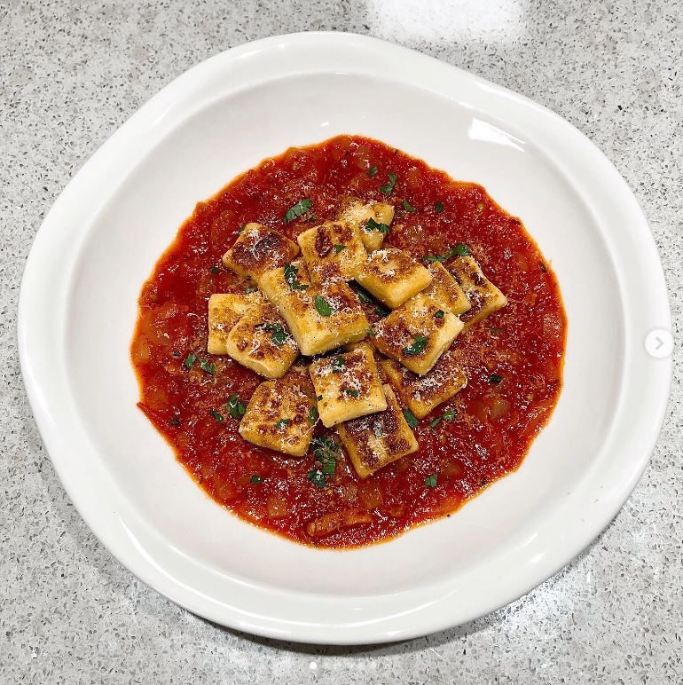
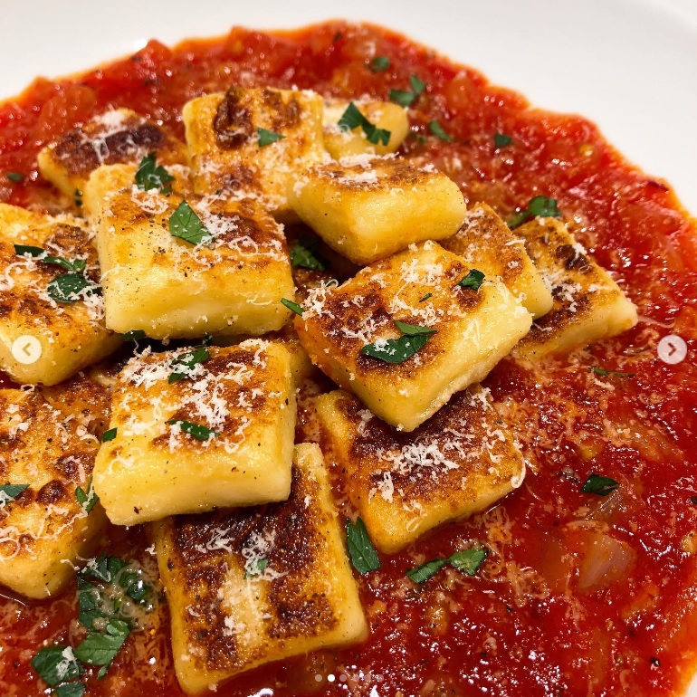
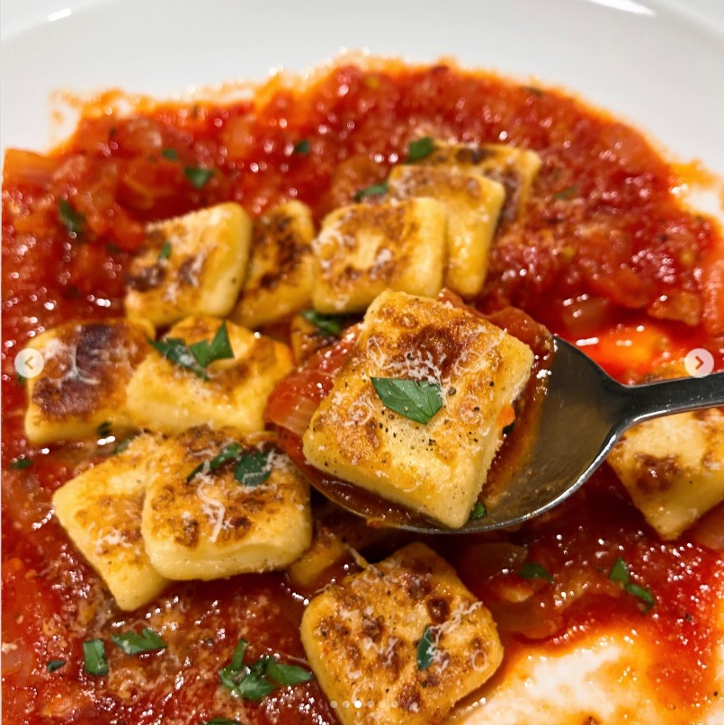

- Pulpo á feira
- Gnocchi
- Buta No Kakuni
2. 뇨끼 (Gnocchi)
  
-----------------------------------------------------------------------------------------------------------------
감자 440g - 삶고 채에 거르니 400g 정도
중력분 밀가루 80g + 감자전분 20g - 나눠가며 넣어주기
파마산 치즈가루 20g
노른자 1개
소금, 후추
사용했습니다.
-----------------------------------------------------------------------------------------------------------------
<뇨끼>
(1) 감자의 껍질을 벗기고 잘라줍니다.
끓는 물에 삶아줍니다.
(젓가락을 눌렀을때 쑥 들어갈때까지)
(2) 감자를 체에 걸러줍니다.
(3) 약간의 시간을 두고 감자의 수분을 살짝 날린 뒤
밀가루, 파마산 치즈, 노른자, 소금, 후추를 넣어줍니다.
(4) 반죽이 충분히 뭉쳐지면
최대한 적은 힘으로 모양을 만들어줍니다.
(5) 먹기 좋은 크기로 만들어줍니다.
동그란 모양, 네모난 모양, 포크를 이용한 뇨끼 등
(냉동보관 하려면 이때 덧가루를 묻힌 뒤 보관)
(6) 끓는 물에 넣어 삶아줍니다.
(뇨끼가 떠오르면 30초 후 건져줍니다.)
(7) 팬에 올리브유를 두른 뒤 노릇하게 구워줍니다.
(8) 원하는 소스나 원하는 조리 방법으로 먹기!
-----------------------------------------------------------------------------------------------------------------
.
.
유튜브 ‘김밀란’님 영상과
‘최요비’에 나오는 송훈 셰프님 영상을 참고했습니다.
coding